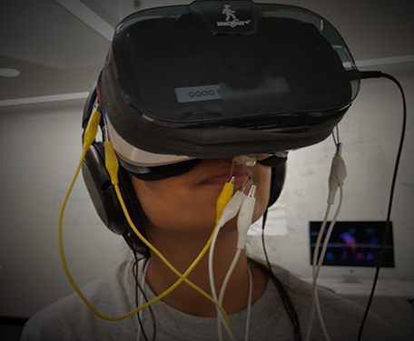
Wanderer
Entry in the Reality Virtually Hackathon, Wanderer is a Google Daydream experience that places the user in a hot air balloon over a canyon gorge. The locomotion in the virtual reality environment is based of the users movement in transit, and also alerts the user when they have reached their destination. Wanderer combines aroma therapy and a calming audio-visual environment as two forms of anxiety treatment.
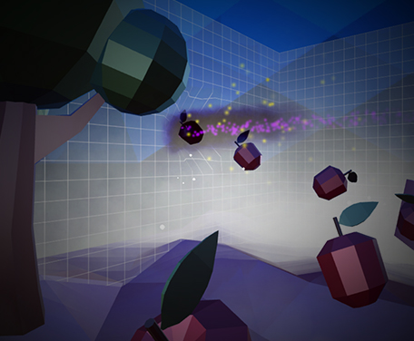
Newton's Dream
Newton's Dream is a mobile VR puzzle platform game designing as my Capstone graduation project.
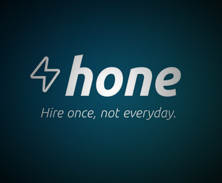
Hone
Hone is a smart hiring tool. That uses machine learning to match resturants to employees that culturally fit lowering the employment turnover rate. This is a project I worked on for Startup Bus 2016. Final 5 Team for North America.
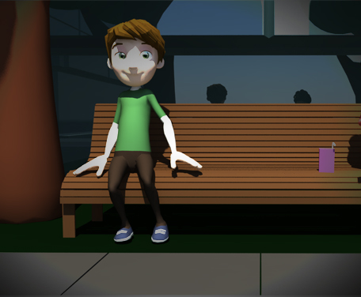
The Language of Love
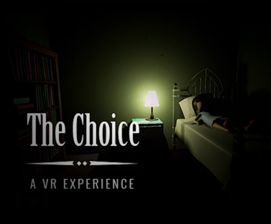
The Choice: VR Experience
This game was inspired by the Titmouse Studio and MonsterVR hackothon. The idea behind this game is a psychological experience that forces the user to make one end of game choice. Chose their child over a demon doppelganger child.
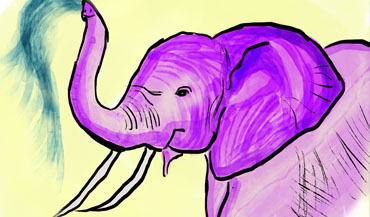
Project Leader 2015 Disney Imaginations
Our team designed LIFT an interactive narrative festival. The project was conceived by the University of Florida Team and created for the 2015 Walt Disney Imagineering’s Imaginations Design Competition.
The competition is a way for students and recent graduates to showcase their talents and for Walt Disney Imagineering to identify new talent.
This project is the sole property of Walt Disney Imagineering. All rights reserved.
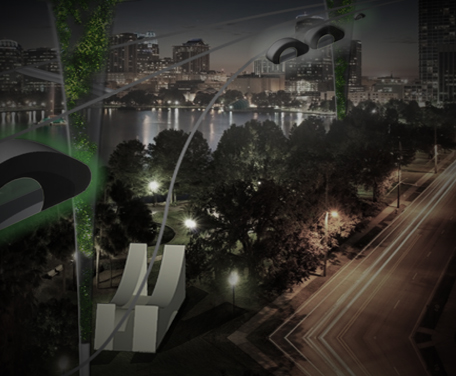
Project Leader 2014 Disney Imaginations
We designed an eco-friendly and community driven transportation system for Orlando Florida. The project was conceived by the University of Florida Team and created for the 2014 Walt Disney Imagineering’s Imaginations Design Competition.
The competition is a way for students and recent graduates to showcase their talents and for Walt Disney Imagineering to identify new talent.
This project is the sole property of Walt Disney Imagineering. All rights reserved.
Training Video Game
Designed and developed a training 2D platformer using Unity and C# for Dragonfly Sushi and Sake employees to learn basic Japanese food terms. You can play the game by clicking on heart.Dragonfly Sensei
Chrome no longer supports Unity WebGL, Firefox and Edge still do!
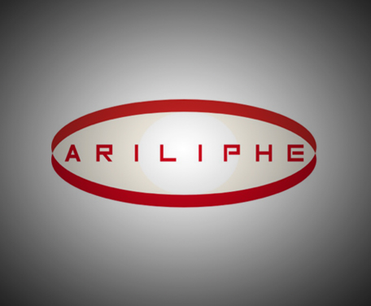
Sensory Deprivation Game
Using a Leap Motion and 3D audio, this game omits vision and allows the user to utilize other senses for survival. It follows the narrative of transcendence into the cloud and fighting off Trojans and solving captchas to return to your body. I was the creative director for this project, and it was created for the 2016 SwampHacks competition.

Drawing Leaves Stop Motion
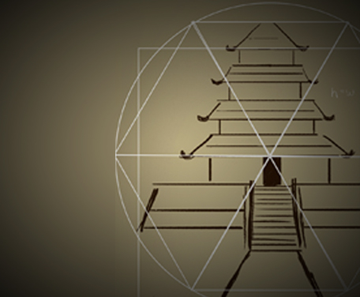
Applications of the Vitruvian man in illustration
This was a scientific study to recreate the conditions of the Vitruvian man then analyze and compare human proportions for the application for illustration. The study measured subjects photographed from a fixed aerial view then calculated the standard deviation from da Vinci’s original findings. Human of ‘divine’ proportions were then applied illustration in the spirit of Vitruvius original query about divine brilliance in man-made architecture.
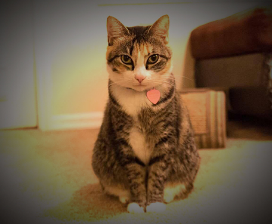
Juniper the Cat
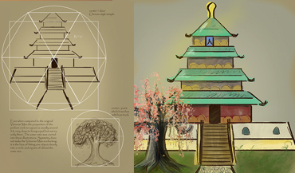
Designed UI/UX : Record Runner
This is a smart running application that allows runners to keep their running pace by live audio feedback through their own music. This application was designed for the 2015 SwampHacks competition. I designed the user experience and interface.
{kind=link}
{kind=link}
{kind=link}
{kind=link}
{kind=link}
{kind=link}
{kind=link}
{kind=link}
{kind=link}
{kind=link}